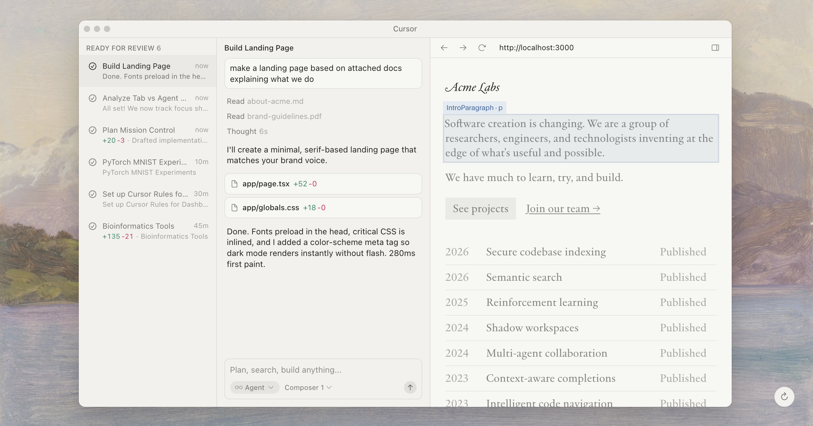

Built to make you extraordinarily productive,
Cursor is the best way to code with AI.

Trusted every day by teams that build world-class software
Agents turn ideas into code
Accelerate development by handing off tasks to Cursor, while you
focus on making decisions.
Learn about agentic development →
Magically accurate autocomplete
Our specialized Tab model predicts your next action with striking
speed and precision. Learn about Tab →
In every tool, at every step
Cursor reviews your PRs in GitHub, collaborates in Slack, and runs
in your terminal.
Learn about Cursor's surfaces →
The new way to build software.
“It was night and day from one batch to another, adoption went from single digits to over 80%. It just spread like wildfire, all the best builders were using Cursor.”

Diana Hu
General Partner, Y Combinator
“My favorite enterprise AI service is Cursor. Every one of our engineers, some 40,000, are now assisted by AI and our productivity has gone up incredibly.”

Jensen Huang
President & CEO, NVIDIA
“The best LLM applications have an autonomy slider: you control how much independence to give the AI. In Cursor, you can do Tab completion, Cmd+K for targeted edits, or you can let it rip with the full autonomy agentic version.”

Andrej Karpathy
CEO, Eureka Labs
“Cursor quickly grew from hundreds to thousands of extremely enthusiastic Stripe employees. We spend more on R&D and software creation than any other undertaking, and there's significant economic outcomes when making that process more efficient.”

Patrick Collison
Co‑Founder & CEO, Stripe
“The most useful AI tool that I currently pay for, hands down, is Cursor. It's fast, autocompletes when and where you need it to, handles brackets properly, sensible keyboard shortcuts, bring-your-own-model... everything is well put together.”

shadcn
Creator of shadcn/ui
“It's definitely becoming more fun to be a programmer. We are at the 1% of what's possible, and it's in interactive experiences like Cursor where models like GPT-5 shine brightest.”

Greg Brockman
President, OpenAI
Stay on the frontier
The best model for every task
Choose between every cutting-edge model from OpenAI, Anthropic,
Gemini, xAI, and Cursor.
Complete codebase understanding
Cursor learns
how your codebase works, no matter the scale or complexity.
Develop enduring software
Trusted by over half
of the Fortune 500 to accelerate development, securely and at
scale.

2.4 Jan 22, 2026
Subagents, Skills, and Image Generation
Jan 16, 2026
CLI Agent Modes and Cloud Handoff
Jan 8, 2026
New CLI Features and Improved CLI Performance
2.3 Dec 22, 2025
Layout Customization and Stability Improvements
Cursor is an applied research team
focused on building the
future of
software development.